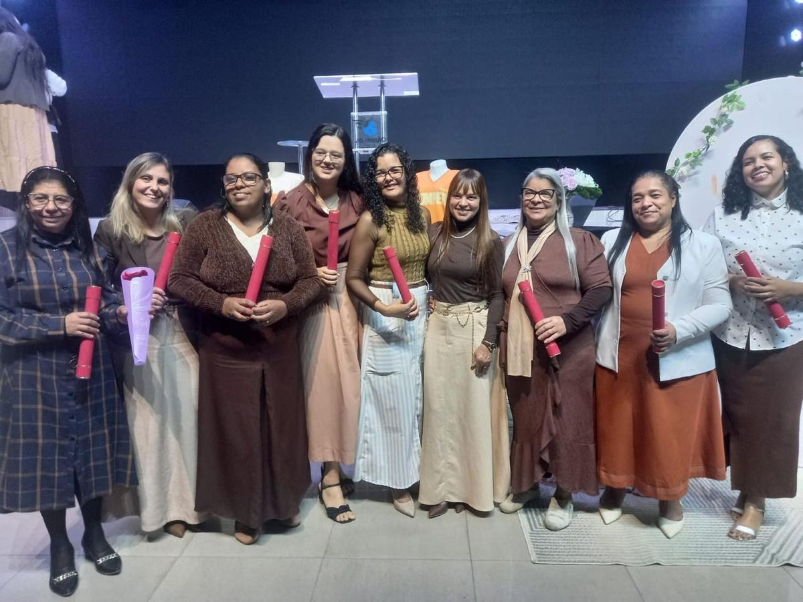

Por trás desse trabalho existe uma história
Sou palestrante em saúde emocional feminina, terapeuta comportamental com formação em inteligência emocional, escritora, mãe e casada há 26 anos.
Já passei por vales muito fundos, daqueles em que a gente acha que não vai conseguir levantar, e foi ali que eu entendi o que Deus queria fazer com a minha história. Hoje eu uso tudo que aprendi pra ajudar outras mulheres a entender o que sentem, reconhecer o valor que têm e descobrir que ainda tem muita vida pela frente.
Com carinho,
Andréa
